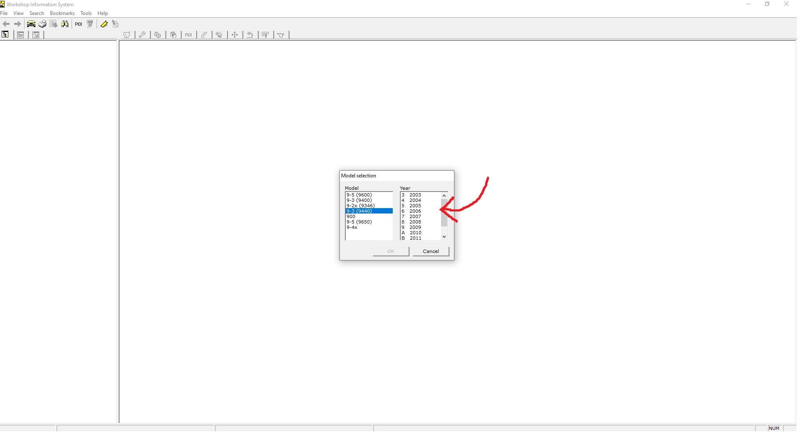
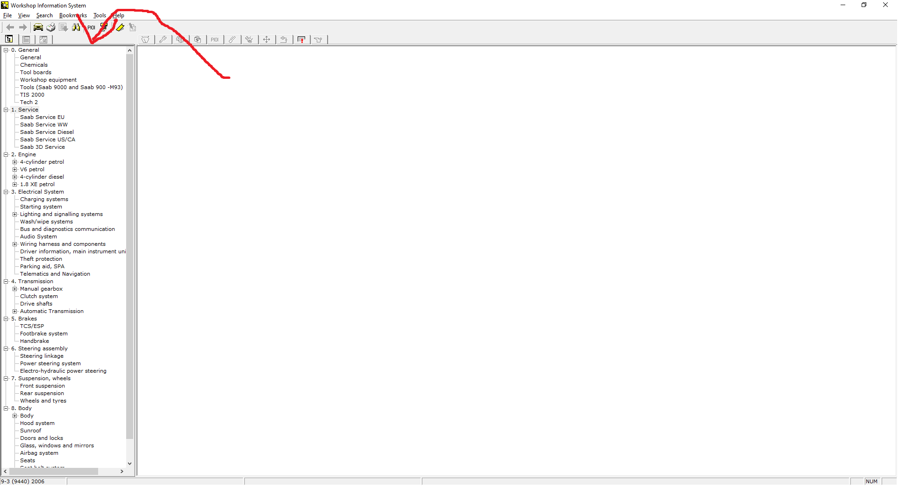

INSTALLATION INSTRUCTIONS¶
Step 1 - You will need to download the application from this link - Link
Step 2 - After downloading the .exe, just gotta run it, where the screen should have this progression bar on it.
{kind=link}
Step 3 - After it has been installed, you will be met with this screen, where you will just hit the OK button and use the default user
{kind=link}
Step 4 - On the next page, you will go ahead and select which model SAAB you have.
{kind=link}
Step 5 - You will then select the year of your car, and after that, you will be in it all the way.
{kind=link}
- Step 6 - On the left side of the application, you will see 9 different sections
General
Service
Engine
Electrical System
Transmission
Brakes
Steering Assembly
Suspension/Wheels
Body
This is where you would go if you need to know how to perform a specific fix or repair.
{kind=link}
Step 7 - Near the top of the screen are 11 icons representing different things.
You would need to go to the specific section where the issue is coming from, then figure out what you need to do in order to properly diagnose the issue.
{kind=link}
Warning
Licensing - SAAB as an automotive company is no longer around, and as such it is difficult to know who officially owns the rights to this software, making it a gray area legally.